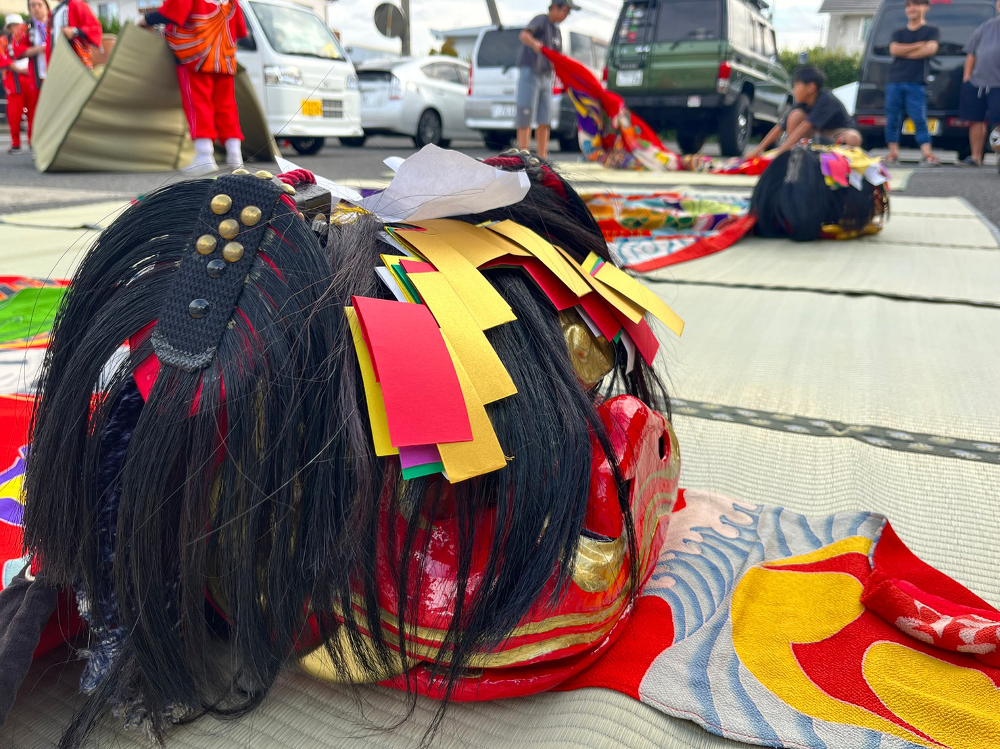
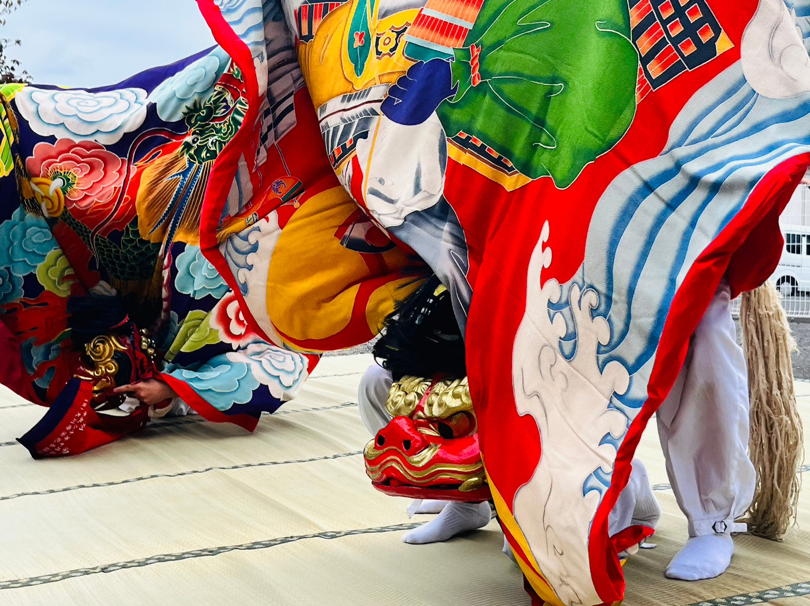
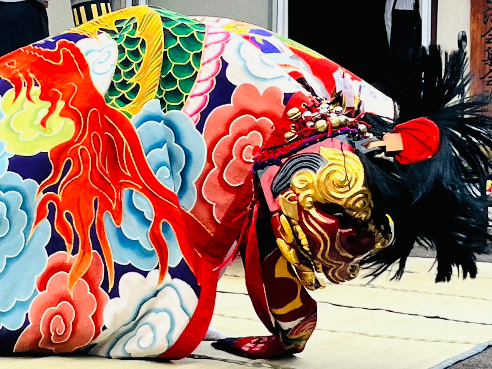
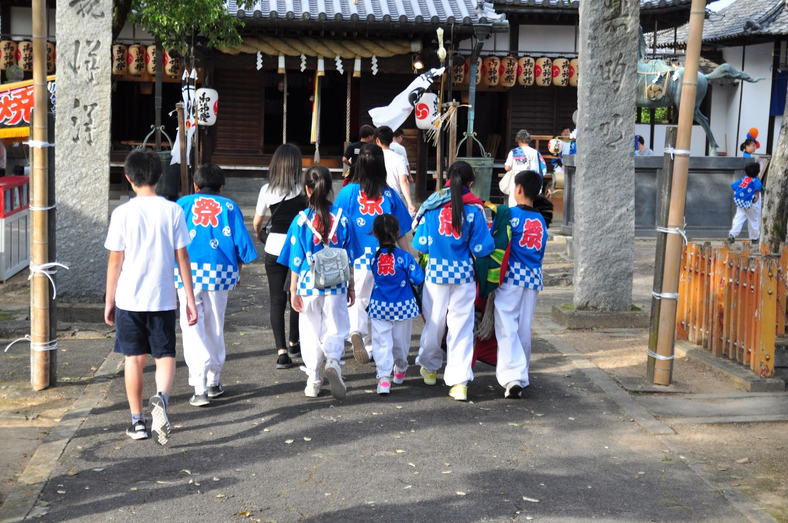
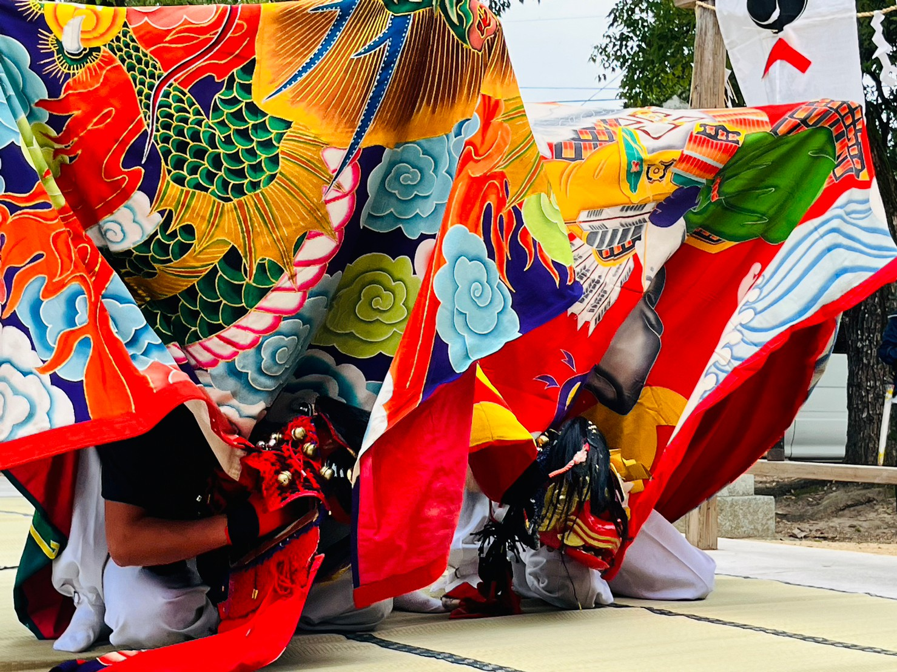

伝統をつなぎ、地域の心を舞う。
下川部獅子組
香川県高松市川部町の獅子舞団体です。
下川部天満神社と川部八幡神社にて奉納を行い、
地域とともに歩み、伝統の獅子舞を受け継いでいます。
今年の奉納日
下川部天満神社
9月26日（土）
27日（日）
川部八幡神社
10月3日（土）
4日（日）
活動・奉納
下川部獅子組は、秋の例大祭での奉納を一年の中心に活動しています。
祭りに向けて練習を重ね、地域の皆さまとともに伝統を守り継いでいます。
秋季例大祭 奉納
下川部天満神社
9月26日（土）・27日（日）
五穀豊穣・無病息災を祈願して奉納します。
秋季例大祭 奉納
川部八幡神社
10月3日（土）・4日（日）
五穀豊穣・無病息災を祈願して奉納します。
01
練習
奉納に向けて、笛・太鼓・獅子の稽古を重ねます。見学・体験も受け付けています。
02
秋季例大祭での奉納
下川部天満神社・川部八幡神社の両社にて、獅子舞を奉納します。
03
イベント出演
「獅子舞王国さぬき」など、地域のイベントにも出演しています。出演依頼はお問い合わせよりご相談ください。
動画
獅子舞王国さぬき2023
〈普及版〉に出演しました。
（33:42〜 / 10:56〜）
写真ギャラリー







下川部獅子組について
下川部獅子組は、香川県高松市川部町に伝わる獅子舞を継承する団体です。
毎年秋に下川部天満神社・川部八幡神社での奉納を行い、地域の五穀豊穣・無病息災を祈願しています。
⛩下川部天満神社
⛩川部八幡神社
お知らせ
-
今年の奉納日が決まりました（下川部天満神社 9月26日・27日／川部八幡神社 10月3日・4日）
-
ウェブサイトを公開しました